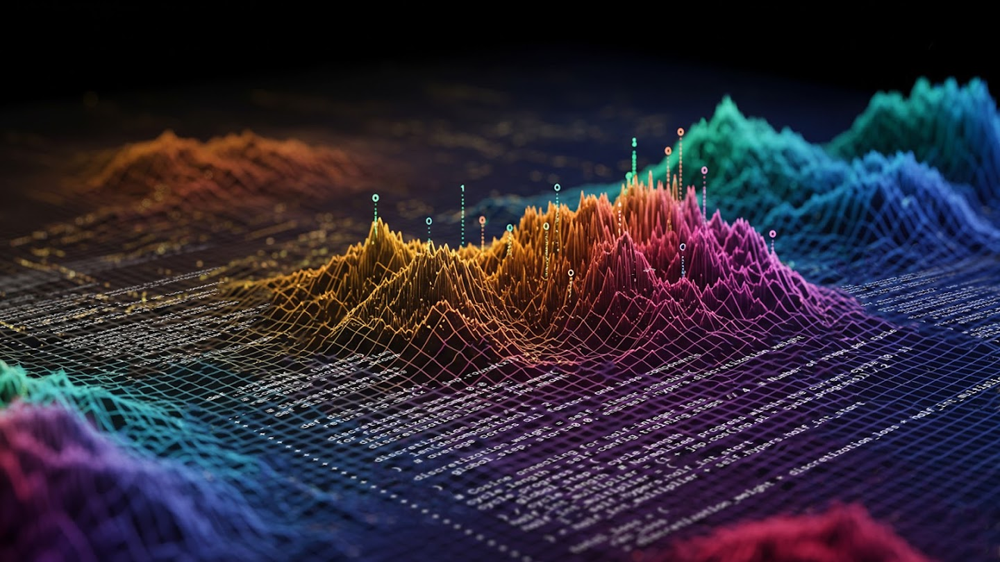
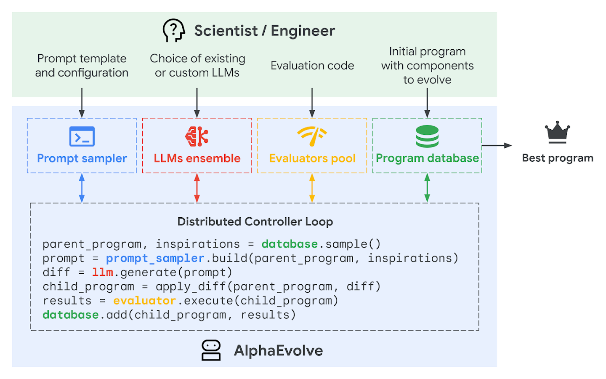
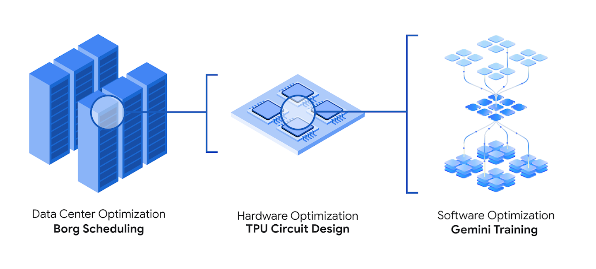

AlphaEvolve: A Gemini-powered coding agent for designing advanced algorithms

New AI agent evolves algorithms for math and practical applications in computing by combining the creativity of large language models with automated evaluators
Large language models (LLMs) are remarkably versatile. They can summarize documents, generate code or even brainstorm new ideas. And now we’ve expanded these capabilities to target fundamental and highly complex problems in mathematics and modern computing.
Today, we’re announcing AlphaEvolve, an evolutionary coding agent powered by large language models for general-purpose algorithm discovery and optimization. AlphaEvolve pairs the creative problem-solving capabilities of our Gemini models with automated evaluators that verify answers, and uses an evolutionary framework to improve upon the most promising ideas.
AlphaEvolve enhanced the efficiency of Google's data centers, chip design and AI training processes — including training the large language models underlying AlphaEvolve itself. It has also helped design faster matrix multiplication algorithms and find new solutions to open mathematical problems, showing incredible promise for application across many areas.
Designing better algorithms with large language models
In 2023, we showed for the first time that large language models can generate functions written in computer code to help discover new and provably correct knowledge on an open scientific problem. AlphaEvolve is an agent that can go beyond single function discovery to evolve entire codebases and develop much more complex algorithms.
AlphaEvolve leverages an ensemble of state-of-the-art large language models: our fastest and most efficient model, Gemini Flash, maximizes the breadth of ideas explored, while our most powerful model, Gemini Pro, provides critical depth with insightful suggestions. Together, these models propose computer programs that implement algorithmic solutions as code.

Diagram showing how the prompt sampler first assembles a prompt for the language models, which then generate new programs. These programs are evaluated by evaluators and stored in the programs database. This database implements an evolutionary algorithm that determines which programs will be used for future prompts.
AlphaEvolve verifies, runs and scores the proposed programs using automated evaluation metrics. These metrics provide an objective, quantifiable assessment of each solution’s accuracy and quality. This makes AlphaEvolve particularly helpful in a broad range of domains where progress can be clearly and systematically measured, like in math and computer science.
Optimizing our computing ecosystem
Over the past year, we’ve deployed algorithms discovered by AlphaEvolve across Google’s computing ecosystem, including our data centers, hardware and software. The impact of each of these improvements is multiplied across our AI and computing infrastructure to build a more powerful and sustainable digital ecosystem for all our users.

Diagram showing how AlphaEvolve helps Google deliver a more efficient digital ecosystem, from data center scheduling and hardware design to AI model training.
Improving data center scheduling
AlphaEvolve discovered a simple yet remarkably effective heuristic to help Borg orchestrate Google's vast data centers more efficiently. This solution, now in production for over a year, continuously recovers, on average, 0.7% of Google’s worldwide compute resources. This sustained efficiency gain means that at any given moment, more tasks can be completed on the same computational footprint. AlphaEvolve's solution not only leads to strong performance but also offers significant operational advantages of human-readable code: interpretability, debuggability, predictability and ease of deployment.
Assisting in hardware design
AlphaEvolve proposed a Verilog rewrite that removed unnecessary bits in a key, highly optimized arithmetic circuit for matrix multiplication. Crucially, the proposal must pass robust verification methods to confirm that the modified circuit maintains functional correctness. This proposal was integrated into an upcoming Tensor Processing Unit (TPU), Google’s custom AI accelerator. By suggesting modifications in the standard language of chip designers, AlphaEvolve promotes a collaborative approach between AI and hardware engineers to accelerate the design of future specialized chips.
Enhancing AI training and inference
AlphaEvolve is accelerating AI performance and research velocity. By finding smarter ways to divide a large matrix multiplication operation into more manageable subproblems, it sped up this vital kernel in Gemini’s architecture by 23%, leading to a 1% reduction in Gemini's training time. Because developing generative AI models requires substantial computing resources, every efficiency gained translates to considerable savings. Beyond performance gains, AlphaEvolve significantly reduces the engineering time required for kernel optimization, from weeks of expert effort to days of automated experiments, allowing researchers to innovate faster.
AlphaEvolve can also optimize low level GPU instructions. This incredibly complex domain is usually already heavily optimized by compilers, so human engineers typically don't modify it directly. AlphaEvolve achieved up to a 32.5% speedup for the FlashAttention kernel implementation in Transformer-based AI models. This kind of optimization helps experts pinpoint performance bottlenecks and easily incorporate the improvements into their codebase, boosting their productivity and enabling future savings in compute and energy.
Advancing the frontiers in mathematics and algorithm discovery
AlphaEvolve can also propose new approaches to complex mathematical problems. Provided with a minimal code skeleton for a computer program, AlphaEvolve designed many components of a novel gradient-based optimization procedure that discovered multiple new algorithms for matrix multiplication, a fundamental problem in computer science.
A list of changes proposed by AlphaEvolve to discover faster matrix multiplication algorithms. In this example, AlphaEvolve proposes extensive changes across several components, including the optimizer and weight initialization, the loss function, and hyperparameter sweep. These changes are highly non-trivial, requiring 15 mutations during the evolutionary process.
AlphaEvolve’s procedure found an algorithm to multiply 4x4 complex-valued matrices using 48 scalar multiplications, improving upon Strassen’s 1969 algorithm that was previously known as the best in this setting. This finding demonstrates a significant advance over our previous work, AlphaTensor, which specialized in matrix multiplication algorithms, and for 4x4 matrices, only found improvements for binary arithmetic.
To investigate AlphaEvolve’s breadth, we applied the system to over 50 open problems in mathematical analysis, geometry, combinatorics and number theory. The system’s flexibility enabled us to set up most experiments in a matter of hours. In roughly 75% of cases, it rediscovered state-of-the-art solutions, to the best of our knowledge.
And in 20% of cases, AlphaEvolve improved the previously best known solutions, making progress on the corresponding open problems. For example, it advanced the kissing number problem. This geometric challenge has fascinated mathematicians for over 300 years and concerns the maximum number of non-overlapping spheres that touch a common unit sphere. AlphaEvolve discovered a configuration of 593 outer spheres and established a new lower bound in 11 dimensions.
The path forward
AlphaEvolve displays the progression from discovering algorithms for specific domains to developing more complex algorithms for a wide range of real-world challenges. We’re expecting AlphaEvolve to continue improving alongside the capabilities of large language models, especially as they become even better at coding.
Together with the People + AI Research team, we’ve been building a friendly user interface for interacting with AlphaEvolve. We’re planning an Early Access Program for selected academic users and also exploring possibilities to make AlphaEvolve more broadly available. To register your interest, please complete this form.
While AlphaEvolve is currently being applied across math and computing, its general nature means it can be applied to any problem whose solution can be described as an algorithm, and automatically verified. We believe AlphaEvolve could be transformative across many more areas such as material science, drug discovery, sustainability and wider technological and business applications.
Acknowledgements
AlphaEvolve was developed by Matej Balog, Alexander Novikov, Ngân Vũ, Marvin Eisenberger, Emilien Dupont, Po-Sen Huang, Adam Zsolt Wagner, Sergey Shirobokov, Borislav Kozlovskii, Francisco J. R. Ruiz, Abbas Mehrabian, M. Pawan Kumar, Abigail See, Swarat Chaudhuri, George Holland, Alex Davies, Sebastian Nowozin, and Pushmeet Kohli. This research was developed as part of our effort focused on using AI for algorithm discovery.
We gratefully acknowledge contributions, advice, and support from Jean-Baptiste Alayrac, Ankit Anand, Natasha Antropova, Giorgio Arena, Mohammadamin Barekatain, Johannes Bausch, Henning Becker, Daniel Belov, Alexander Belyaev, Sebastian Bodenstein, Sebastian Borgeaud, Calin Cascaval, Indranil Chakraborty, Benjamin Chetioui, Justin Chiu, Christopher Clark, Marco Cornero, Jeff Dean, Gaurav Dhiman, Yanislav Donchev, Srikanth Dwarakanath, Jordan Ellenberg, Alhussein Fawzi, Michael Figurnov, Aaron Gentleman, Bogdan Georgiev, Sergio Guadarrama, Demis Hassabis, Patrick Heisel, Chase Hensel, Koray Kavukcuoglu, Sultan Kenjeyev, Aliia Khasanova, Sridhar Lakshmanamurthy, Sergei Lebedev, Dmitry Lepikhin, Daniel Mankowitz, Andrea Michi, Kieran Milan, Vinod Nair, Robert O'Callahan, Cosmin Paduraru, Stig Petersen, Federico Piccinini, Parthasarathy Ranganatha, Bernardino Romera-Paredes, Georges Rotival, Kirk Sanders, Javier Gomez Serrano, Oleg Shyshkov, Timur Sitdikov, Tammo Spalink, Kerry Takenaka, Richard Tanburn, Terence Tao, Amin Vahdat, JD Velasquez, Dimitrios Vytiniotis, Julian Walker, and Pengming Wang. For more details, please see our white paper.
We would like to thank Armin Senoner, Juanita Bawagan, Jane Park, Arielle Bier, and Molly Beck for feedback on the blog post and help with this announcement; William Hood, Irina Andronic, Victoria Johnston, Lucas Dixon, Adam Connors, and Jimbo Wilson for help with the illustrations and figures